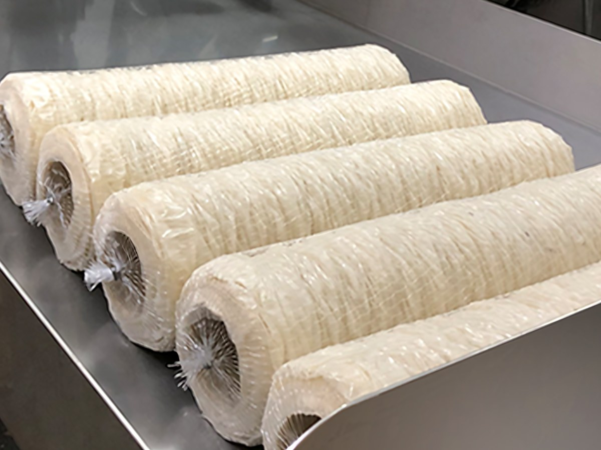
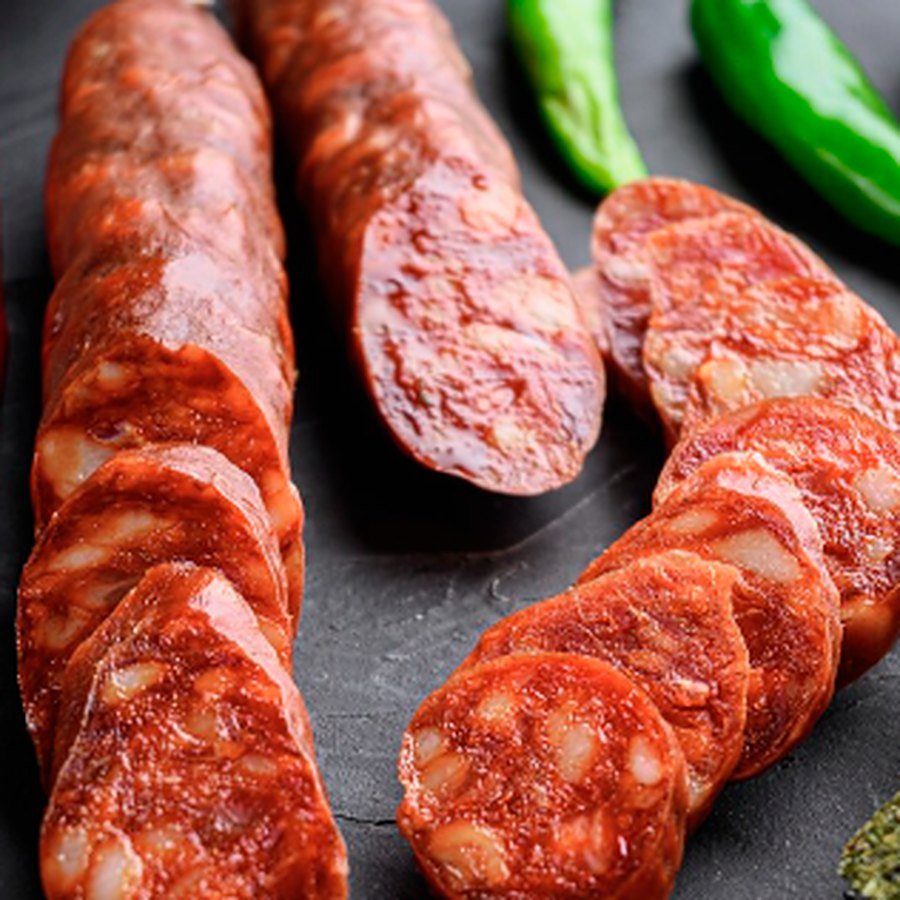
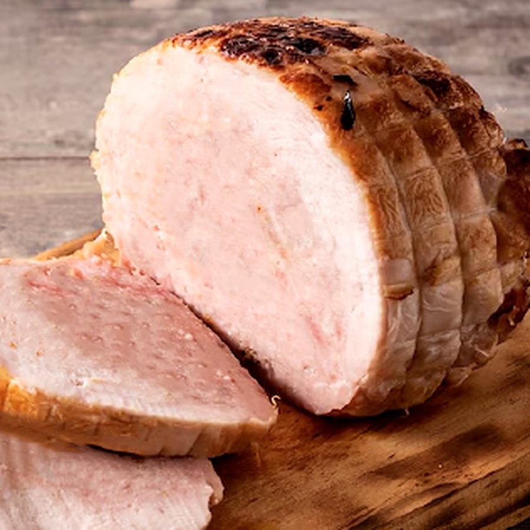
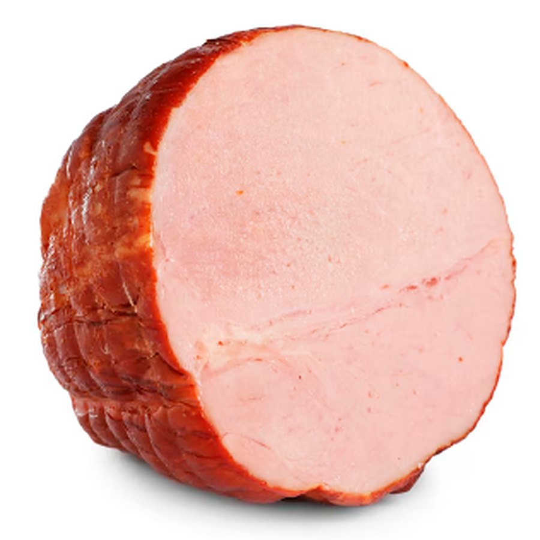
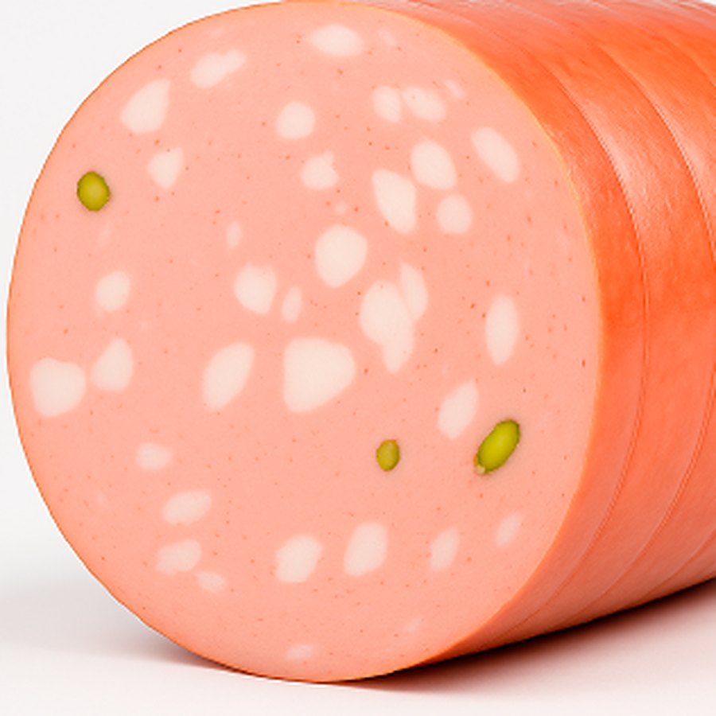
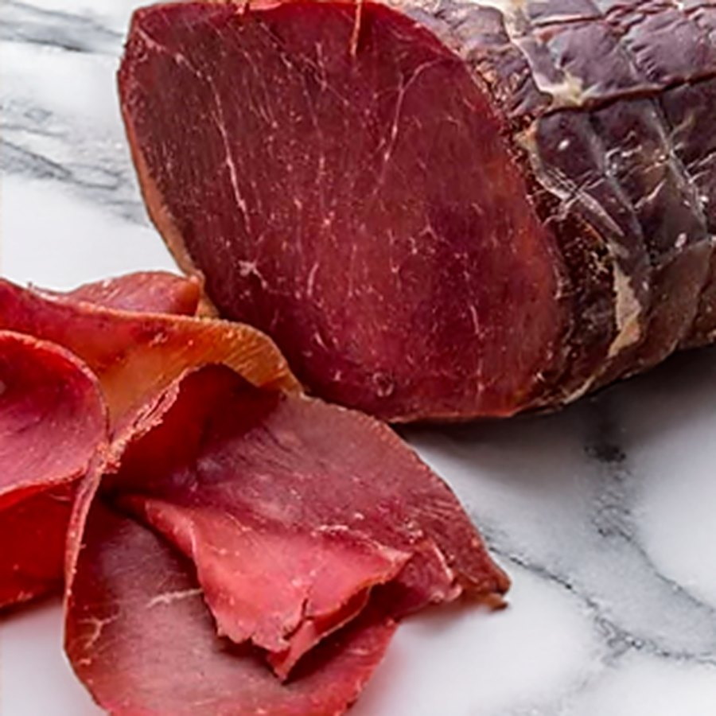

Fibrø® fibrous casing for salami, coppa, ham and mortadella
Regenerated cellulose reinforced with long-fibre paper: it withstands stuffing, keeps its calibre through the whole run and lets smoke and steam through. Shirred into sticks in our plant in La Plata, with RTU (ready-to-use) treatment: it goes straight from the box to the stuffer, no soaking.

- Ø45 to Ø195calibres
- RTUready to use, no soaking
- Shirred sticksready for the stuffer
- La Platashirred in our own plant
The result
Finished pieces made with our products








What Fibrø® fibrous casing is
An artificial casing made of regenerated cellulose reinforced with long-fibre paper. The paper gives it mechanical strength and a uniform calibre; the cellulose makes it permeable to smoke and steam, so it works for cooked, cured and dry products alike.
Depending on the inner treatment, the casing clings to the product (for pieces sold in the casing, such as salami) or peels easily (for pieces unwrapped before sale or slicing).
Calibres and uses
From straight salami to mortadella, every product has its calibre. If your product is not in the table, ask us and we make it to measure.
| Product | Calibre (mm) |
|---|---|
| Straight salami and longaniza | Ø45, 50, 55 and 58 |
| Milano salami | Ø80, 95 and 107 |
| Bresaola and cooked loin | Ø107 |
| Coppa, pork belly and cured loin | Ø107 to Ø165 |
| Ham and mortadella | Ø165 to Ø195 |
Ready to use (RTU): no soaking
The RTU treatment is applied while the casing is shirred into sticks. The stick comes out ready to use: it leaves the box and goes straight into the stuffer, with no soaking buckets and no waiting time on the line.
If your process calls for soaking anyway, dipping the stick in warm water and taking it out immediately is enough.
Shirred in our plant
Metres of casing shirred into one stick, compatible with automatic stuffing and clipping equipment: less handling per piece and fewer stops. On request, impregnated with aromas and flavours.
Fibrous casing is quoted per metre. If you already buy fibrous casing from another source, we also shirr it and apply the RTU treatment through our shirring service.
Frequently asked questions
Does Fibrø® fibrous casing need soaking before stuffing?
No. With the RTU (ready-to-use) treatment the shirred stick is used straight from the box. If you prefer to soak, dip it in warm water and take it out right away.
Which calibre do I use for coppa?
Between Ø107 and Ø165 depending on the size of the piece. For ham and mortadella, Ø165 to Ø195; for straight salami, Ø45 to Ø58.
Is it compatible with automatic clippers?
Yes. The shirred sticks are designed for automatic stuffing and clipping equipment as well as manual stuffing.
How is it quoted?
Per metre of casing. Tell us the calibre, monthly volume and product type and we will send a quote.